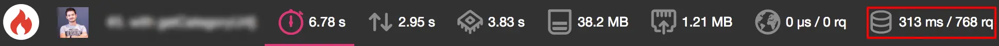
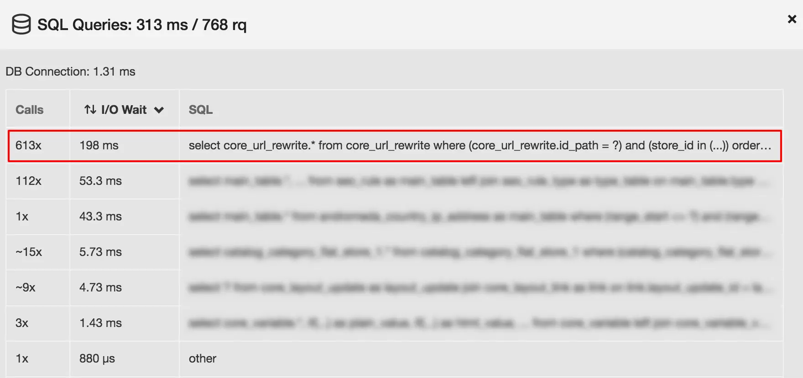
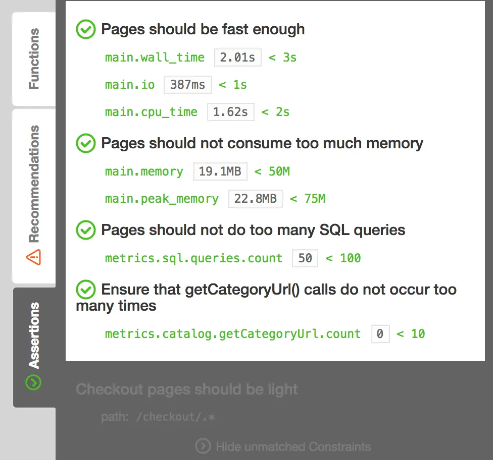

Blackfire & Magento
December 31, 2017
The first thing I profiled with Blackfire was a Magento project with PHP 5.5. Like most existing projects where the addition of new features is constant, we started to face performance issues more and more often, while the codebase keeps growing. The project began four years ago.
This article uses several terms related to Blackfire.
If you are not familiar with it, I suggest you read the excellent PHP Code Performance Explained.
Investigations
Blackfire provides several statistics: wall time, I/O wait, CPU time, memory consumption, network, HTTP and SQL queries. Here is my first profile, without page cache and blocks cache. It allows profiling the real output and not the whole Magento initialization.


You can already see that more than 700 SQL queries are executed on each page only for something related to the URL
rewrites system. In the meantime, the call graph shows that the inclusive time within the navigation/top.phtml
template is equal to 3.92s.
After further investigations, I found out that the performance issue was due to the wrong usage of a custom method in the main menu generation. Where we were retrieving each category URL to populate HTML links, this custom method loads it from the database systematically.
In our case, the url_path attribute is always exactly equal to the canonical URL. And that attribute is already
loaded by default in the categories collection. Thus, the fix is pretty straightforward: access the property via a
Magento getter.
1- <a href="<?php echo $helper->getCategoryUrl($category); ?>">
2+ <a href="<?php echo $helper->getData('url_path'); ?>">
3 <?php echo $category->getData('name'); ?>
4</a>
And with only these few modified characters, here are the results.
Now that the issue is gone, how to be sure that it won’t come back again?
Preventing regressions
It’s common to add a regression by ignoring good practices acquired through experience when a lot of people are working on a project. Especially when team members change often. The code review can protect against these errors, but it’s time-consuming to do it manually. In that case, it would be a good idea to automate these checks.
Blackfire also allows performance testing in addition to profiling. You can use these assertions against all data
gathered by Blackfire (time dimensions and even more). During a Blackfire profile, it will look for a .blackfire.yml
file in the application root directory. Here is an example with a simple skeleton used for Magento.
1tests:
2 Pages should be fast enough:
3 path: "/.*"
4 assertions:
5 - "main.wall_time < 3s"
6 - "main.io < 1s"
7 - "main.cpu_time < 2s"
8
9 Pages should not consume too much memory:
10 path: "/.*"
11 assertions:
12 - "main.memory < 50M"
13 - "main.peak_memory < 75M"
14
15 Pages should not do too many SQL queries:
16 path: "/.*"
17 assertions:
18 - "metrics.sql.queries.count < 100"
19
20 Checkout pages should be light:
21 path: "/checkout/.*"
22 assertions:
23 - "metrics.output.network_out < 200KB"You can transpose this example in any projects running on Magento. It’s an excellent start as you can keep the structure and adjust values depending on your project.
In my example, the performance issue was due to the usage of one specific method. Rather than checking if someone incorrectly uses it on every new pull request, you can add an assertion.
1metrics:
2 catalog.getCategoryUrl:
3 label: "getCategoryUrl() calls"
4 matching_calls:
5 php:
6 - callee: '=PROJECT_MODULE_CLASS::getCategoryUrl'
7
8tests:
9 "Ensure that getCategoryUrl() calls do not occur too many times":
10 path: "/.*"
11 assertions:
12 - "metrics.catalog.getCategoryUrl.count < 10"Our test suite now contains a new metric and a new assertion. Here is what it looks like from the Blackfire results page based on the tests described above.

Afterwords
It’s impressive to see how Blackfire can tell us precisely what is the biggest mistake in a project in less than one hour. But Blackfire does not limit to the manual profiling, and the testing part is a must-have for long-running projects.